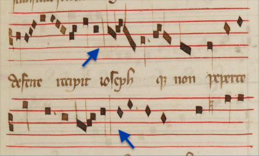
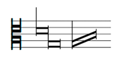
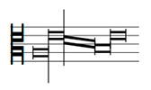

This chapter describes the module for encoding mensural notation from the late 13th
century to about 1600. Historically, mensural notation preceded the development of
Common Music Notation (CMN) and it included a wide range of features that persist
in CMN and that can be encoded in a standard manner in MEI. In mensural notation,
pitches are notated as in CMN, leaving out here the major exception of musica ficta. The pitch is given by the position of the note on the staff and the current clef
as in CMN, and the mensural module introduces no modification to MEI regarding how
pitches are encoded.
There are a number of differences, however, in the representation of duration in mensural
notation. The mensural module introduces specific attribute values for notes and rests
for appropriately encoding mensural durations. One of the main differences is that
the duration of a note is not determined by its symbol, but also by the meter and
the context in which the symbol appears in relation to other notes and rests in the
same voice. The meter is given by one of the 16 mensural species provided by four levels of division: modus major, modus minor, tempus and prolatio. In the case of triple meter and depending on the specific context where the note
is positioned, certain rules must be applied in order to determine the duration of
a note. In these cases, encoding both the sign and its actual duration is highly recommended
(as will be shown in 5.1 Durations).
Another difference is the use of proportions that are indicated by numeric ratios
or by specific mensuration signs. The proportions indicate that the durations have
to be modified and they may be combined. Proportions and mensuration signs were eventually
simplified and became time signatures in CMN. The attributes and elements available
in this module for encoding mensural signs and proportions can be found below (see
5.1 Mensuration and 5.1 Proportions).
In mensural notation, notes can also be notated in ligatures that regroup two or more
notes. Ligatures were a legacy from an earlier notation system that were still widely
used in Renaissance music notation. They gradually disappeared during the seventeenth
century. The mensural module provides multiple ways of encoding the ligatures.
5.1Durations
When the mensural module is included, @dur on <note>, <rest>, and other elements takes the following values (from the Latin names of notes):
maxima:
Two or three times as long as a longa
longa:
Two or three times as long as a brevis
brevis:
Two or three times as long as a semibrevis
semibrevis:
Half or one-third as long as a brevis
minima:
Half or one-third as long as a semibrevis
semiminima:
Half as long as a minima
fusa:
Half as long as a semiminima
semifusa:
Half as long as a fusa
<staff n="1">
<layer n="1">
<note dur="maxima"/>
<note dur="longa"/>
<note dur="brevis"/>
<note dur="semibrevis"/>
<note dur="minima"/>
<note dur="semiminima"/>
<note dur="fusa"/>
<note dur="semifusa"/>
</layer>
</staff>
<staff n="2">
<layer n="1">
<rest dur="maxima"/>
<rest dur="longa"/>
<rest dur="brevis"/>
<rest dur="semibrevis"/>
<rest dur="minima"/>
<rest dur="semiminima"/>
<rest dur="fusa"/>
<rest dur="semifusa"/>
</layer>
</staff>
Listing 227. The upper staff shows the different mensural note shapes and the lower
staff shows the different mensural rests
Normally, longa rests are vertical strokes occupying two or three spaces in the staff, depending
on the mensuration. For instance, in @modusminor="3", they take up three spaces; and in @modusminor="2", they take two. However, there are situations where both types of longa rests can be present in the same piece, regardless of the modus minor. For this reason, the @dur attribute can take on two other values when used within <rest> elements:
2B:
Two-breve rest
3B:
Three-breve rest
The example below illustrates this case in a passage in perfect modus from the triplum voice of a motet in the Roman de Fauvel music manuscript. The blue arrows on the image are pointing to the two-breve and
three-breve rests in this passage.
Figure 53. Inflammatis invidia / Sicut de ligno / Victimae paschali detail from F-Pn
146, fol. 22r (https://gallica.bnf.fr/ark:/12148/btv1b8454675g/f55.image).
<!-- mensuration encoded in <staffDef> element indicates @modusminor = 3 -->
<layer n="1">
<!-- First system in the image -->
<!-- ... -->
<rest dur="2B"/>
<ligature>
<note dur="semibrevis"oct="4"pname="d"/>
<note dur="semibrevis"oct="4"pname="c"/>
</ligature>
<ligature>
<note dur="semibrevis"oct="4"pname="d"/>
<note dur="semibrevis"oct="4"pname="e"/>
</ligature>
<ligature>
<note dur="semibrevis"oct="4"pname="d"/>
<note dur="semibrevis"oct="3"pname="a"/>
</ligature>
<note dur="longa"oct="3"pname="b"/>
<dot form="div"/>
<ligature>
<note dur="semibrevis"oct="4"pname="c"/>
<note dur="semibrevis"oct="4"pname="d"/>
</ligature>
<ligature>
<note dur="semibrevis"oct="4"pname="c"/>
<note dur="semibrevis"oct="3"pname="b"/>
</ligature>
<ligature>
<note dur="semibrevis"oct="3"pname="a"/>
<note dur="semibrevis"oct="3"pname="g"/>
</ligature>
<note dur="longa"oct="3"pname="a"/>
<note dur="semibrevis"oct="4"pname="d"/>
<note dur="semibrevis"oct="4"pname="e"/>
<!-- Next system in the image -->
<note dur="longa"oct="4"pname="f"/>
<note dur="brevis"oct="4"pname="e"/>
<dot form="div"/>
<note dur="brevis"oct="4"pname="d"/>
<ligature>
<note dur="semibrevis"oct="4"pname="c"/>
<note dur="semibrevis"oct="3"pname="b"/>
</ligature>
<ligature>
<note dur="semibrevis"oct="4"pname="c"/>
<note dur="semibrevis"oct="4"pname="d"/>
</ligature>
<note dur="longa"oct="4"pname="e"/>
<rest dur="3B"/>
<!-- ... -->
</layer>
Listing 228. Encoding of Inflammatis invidia / Sicut de ligno / Victimae paschali
detail from F-Pn 146, fol. 22r (https://gallica.bnf.fr/ark:/12148/btv1b8454675g/f55.image)
5.1.1Alteration and Imperfection
In ternary mensurations, the ambiguity between the note shape and its actual duration
requires specific attention. The rules of mensural notation can require the alteration
or the imperfection of a note; that is, an increase or reduction in its performed
duration. In these cases, if the encoding is intended to be used for more than just
graphically representing the notation, encoding only the note shape by means of the
@dur attribute alone is insufficient. In that case, in addition to encoding the duration
sign in the @dur attribute, it is recommended to encode its performed duration in the @dur.quality attribute. The @dur.quality attribute specifies the length of a note according to the contextual rules of mensural
notation. Its values, listed below, are adopted from the original Latin terms:
perfecta:
Three times the duration of the note in the next smaller degree
imperfecta:
Two times the duration of the note in the next smaller degree
altera:
Twice the original duration of the note (only usable in perfect mensurations)
minor:
Category of a regular semibrevis in Ars antiqua, equivalent to a third of a brevis
maior:
Category of an altered semibrevis in Ars antiqua, equivalent to two minor semibrevis
duplex:
One of the three categories of a longa in Ars antiqua ('duplex', 'perfecta', and 'imperfecta')
The last three values are to be used exclusively in Ars antiqua mensural notation, where maior and minor refer to types of semibreves, and duplex refers to a type of longa. Examples of each of these six values are presented below. In these examples, the
‘voice’ staff renders the notes in the code snippet, and the ‘reference’ staff, together
with the dotted bar lines, are shown to help to visualize the relative values of the
notes in the ‘voice’ staff.
The following example illustrates an alteration (the second brevis) in modus minor perfectus. Notice that the second brevis has doubled its regular value, it has been altered, unlike the first one.
<!-- mensuration encoded in <staffDef> element indicates @modusminor = 3 -->
<layer n="1">
<note dur="longa"dur.quality="perfecta"/>
<barLine form="dashed"/>
<note dur="brevis"/>
<barLine form="dashed"/>
<note dur="brevis"dur.quality="altera"/>
<barLine form="dashed"/>
<note dur="longa"dur.quality="perfecta"/>
<barLine form="dashed"/>
</layer>
Listing 229. Example of alteration (The bottom staff, together with the dotted barlines,
is used here to help visualizing the durational values of the notes in the upper staff)
It is possible to omit the @dur.quality attribute in a note when the performed duration of the note is the default value
provided by the mensuration. In this case, the longas are perfect, just as the mensuration (perfect modus minor) indicates. Therefore, the @dur.quality attribute can be omitted for the two longas.
<!-- mensuration encoded in <staffDef> element indicates @modusminor = 3 -->
<layer>
<note dur="longa"/>
<note dur="brevis"/>
<note dur="brevis"dur.quality="altera"/>
<note dur="longa"/>
</layer>
Listing 230. Example omitting @dur.quality for default values provided by the mensuration The same applies to the examples that follow.
The following example illustrates an imperfection (the two longae) in modus minor perfectus with the same longa-brevis-brevis-longa sequence but with an additional dot of division between the two breves (see 5.1.1 Dots for more details). Notice that here the longae have been imperfected, unlike the previous example in which they kept the perfect
value indicated by the mensuration.
<!-- mensuration encoded in <staffDef> element indicates @modusminor = 3 -->
<layer n="1">
<note dur="longa"dur.quality="imperfecta"/>
<barLine form="dashed"/>
<note dur="brevis"/>
<dot form="div"/>
<barLine form="dashed"/>
<note dur="brevis"/>
<barLine form="dashed"/>
<note dur="longa"dur.quality="imperfecta"/>
<barLine form="dashed"/>
</layer>
Listing 231. Example of imperfection (The bottom staff, together with the dotted barlines,
is used here to help visualizing the durational values of the notes in the upper staff)
The following example in modus minor imperfectus illustrates the use of a dot of augmentation following the longa (see 5.1.1 Dots for more details). Notice that the longa, which is supposed to be imperfect according to the mensuration, has a perfect value
due to the augmentation dot.
<!-- mensuration encoded in <staffDef> element indicates @modusminor = 2 and @tempus
= 2 -->
<layer n="1">
<note dur="longa"dur.quality="perfecta"/>
<dot form="aug"/>
<barLine form="dashed"/>
<note dur="brevis"/>
<barLine form="dashed"/>
</layer>
Listing 232. Example of augmentation (The bottom staff, together with the dotted barlines,
is used here to help visualizing the durational values of the notes in the upper staff)
Finally, the following example illustrates the @dur.quality values related to the Ars antiqua style, for perfect modus, with the breve equivalents notated in the lower staff for reference (as in the previous
examples).
<!-- mensuration encoded in <staffDef> element indicates @modusminor = 3 and @tempus
= 3 -->
<layer n="1">
<note dur="longa"dur.quality="perfecta"/>
<barLine form="dashed"/>
<note dur="semibrevis"dur.quality="minor"/>
<note dur="semibrevis"dur.quality="minor"/>
<note dur="semibrevis"dur.quality="minor"/>
<dot form="div"/>
<barLine form="dashed"/>
<note dur="semibrevis"dur.quality="minor"/>
<note dur="semibrevis"dur.quality="maior"/>
<barLine form="dashed"/>
<note dur="brevis"/>
<barLine form="dashed"/>
<note dur="longa"dur.quality="duplex"/>
<barLine form="dashed"/>
</layer>
Listing 233. Example of ars antiqua related values for perfect modus (The bottom staff,
together with the dotted barlines, is used here to help visualizing the durational
values of the notes in the upper staff)
Note: In Ars Antiqua, only the longa could be "perfecta" / "imperfecta" and the brevis could have a regular value ("recta") or be "altera". In the Ars nova, principles of imperfection and alteration were extended into the other note levels
(brevis-semibrevis and semibrevis-minima). This means that the breves in Ars antiqua do not have a "perfecta" / "imperfecta" quality, and this is why there is no @dur.quality attribute for the breves in the previous example. However, the brevis can have a ternary division (indicated by @tempus="3"), being divided either into three (equal) minor semibreves or into a minor-maior pair of semibreves. The encoding also allows for the possibility of encoding a binary division of the
breve in Ars antiqua notations: the indication @tempus="2" indicates the breve is divided into two equal semibreves. This is why in this example with @tempus="3", the semibreves do have a @dur.quality attribute (with values minor or maior).
An alternative encoding---removing the @dur.quality attributes for notes which lengths are not modified from their default values (i.e., the perfect long and the minor semibreves)---would be:
<!-- mensuration encoded in <staffDef> element indicates @modusminor = 3 and @tempus
= 3 -->
<layer>
<note dur="longa"/>
<note dur="semibrevis"/>
<note dur="semibrevis"/>
<note dur="semibrevis"/>
<dot form="div"/>
<note dur="semibrevis"/>
<note dur="semibrevis"dur.quality="maior"/>
<note dur="brevis"/>
<note dur="longa"dur.quality="duplex"/>
</layer>
Listing 234. Encoding of the ars antiqua related values for perfect modus (see example
above)
The conjunct use of the @dur and @dur.quality attributes is generally enough to encode the duration of a note—and, as indicated
before, one could even remove @dur.quality when its value is in agreement with the mensuration. However, there are cases (e.g., partial imperfection) where the values of @dur.quality are not enough to provide the note’s duration.
5.1.1Partial Imperfection
In opposition to regular imperfection, which is caused by a note of the next smaller
degree (e.g., a perfect brevis imperfected by a following/preceding semibrevis), partial imperfection is caused by a note of two or even three orders apart. As
an example, consider an imperfect longa made up of two perfect breves. This longa can be ‘partially imperfected’ by a following/preceding semibrevis. This semibrevis causes part of the longa—one of its perfect breves—to be imperfected, taking away one-third of one of its two halves. In this case,
the longa’s value changes from 6 semibreves (two perfect breves) into 5 semibreves. Partial imperfection is not supported by the @dur.quality attribute—because there can be many cases of partial imperfection, as will be seen
in the following examples. To encode a partial imperfection, the @num and @numbase pair of attributes are used instead. Given the change in the longa’s value from 6 semibreves to 5 semibreves, the corresponding attributes to encode this particular case of partial imperfection
would be @num="6" and @numbase="5" as shown below in the code snippet and its rendering.
<!-- mensuration encoded in <staffDef> element indicates @modusminor = 2 and @tempus
= 3 -->
<layer n="1">
<note dur="longa"num="6"numbase="5"/>
<barLine form="dotted"/>
<note dur="semibrevis"/>
<barLine form="dashed"/>
</layer>
Listing 235. Example of "partial imperfection of an immediate part" (ad partem propinquam)
Partial imperfection can also happen from both sides of a note at once, as shown below:
<!-- mensuration encoded in <staffDef> element indicates @modusminor = 2 and @tempus
= 3 -->
<layer n="1">
<note dur="semibrevis"/>
<barLine form="dotted"/>
<note dur="longa"num="6"numbase="4"/>
<barLine form="dotted"/>
<note dur="semibrevis"/>
<barLine form="dashed"/>
</layer>
Listing 236. Example of "partial imperfection" from both sides (ad partes)
An example of partial imperfection caused by a note three orders apart is given next.
Here the longa is partially imperfected by a minima (instead of by a semibrevis).
<!-- mensuration encoded in <staffDef> element indicates @modusminor = 2, @tempus
= 2, and @prolatio = 3 -->
<layer n="1">
<note dur="longa"num="12"numbase="11"/>
<barLine form="dotted"/>
<note dur="minima"/>
<barLine form="dashed"/>
</layer>
Listing 237. Example of "partial imperfection of a remote part" (ad partem remotam)
In the next example, the longa is also imperfected by a minima. However, the @num and @numbase ratio is different from the example above because the default value of the longa here (18 minimas) is different from that of the previous example (12 minimas).
<!-- mensuration encoded in <staffDef> element indicates @modusminor = 3, @tempus
= 2, and @prolatio = 3 -->
<layer n="1">
<note dur="longa"num="18"numbase="17"/>
<barLine form="dotted"/>
<note dur="minima"/>
<barLine form="dashed"/>
</layer>
Listing 238. Example of "partial imperfection of a remote part" (ad partem remotam)
5.1Mensuration
Using the mensural module, mensuration signs can be indicated with the attributes
available on the <scoreDef> and <staffDef> elements. Mensuration signs encoded using attributes on <scoreDef> are regarded as default values which may be overridden by values attached to individual
<staffDef> elements.
The division levels corresponding to modus maior, modus minor, tempus, and prolatio can be encoded in the @modusmaior, @modusminor, @tempus, and @prolatio attributes respectively. Their value must be 3 (perfect) or 2 (imperfect).
The mensur signs themselves can be encoded in the @mensur.sign attribute with a possible value of C or O. Its orientation can be encoded in the @mensur.orient attribute, for example, with the value reversed for a flipped C sign. The number of slashes (up to 6) can be given in the @mensur.slash attribute. There is also a @mensur.dot attribute for indicating the presence of a dot through the boolean values true or "false".
Describes the rotation or reflection of the base symbol.
<mensur> elements can also be used instead of <staffDef> and its attributes. In <mensur>, the division levels are encoded with the previously mentioned @modusmaior, @modusminor, @tempus, and @prolatio attributes, while the attributes to indicate the mensur signs are: @sign, @orient, @slash, and @dot. <mensur> can be a child of the <staffDef> and <layer> elements.
The following example illustrates a change in mensuration. In this case, the element <mensur> is used within the <layer> element, preceding the stream of notes affected by the new mensuration defined by
it.
Sesquialtera is frequently used to change the mensuration. The effect of the sesquialtera on the
mensuration can be encoded by using the @tempus and @prolatio attributes of <mensur> (for example, when changing the tempus to perfect, the effect can be encoded in @tempus="3"). The actual sesquialtera can be encoded using @num="3", @numbase="2", and @level to define the note level the sesquialtera is applied to (e.g., @level="semibrevis").
5.1.1Implicit mensuration
It is common in Ars antiqua and some Ars nova pieces to have no mensuration signs. In this case, the mensuration—the division levels
corresponding to modus maior, modus minor, tempus, and prolatio—is given by the context. The next example shows the incipit of a four-voice piece,
Josquin’s Tu solus qui facis mirabilia, where only two of the voices (Cantus and Tenor) have a mensuration sign. The other two (Altus and Bassus) have no mensuration signs, and the mensura is given by the context. Therefore, while only the Cantus and the Tenor have attributes for encoding the mensuration sign (in this case, @mensur.sign and @mensur.slash), all four voices include attributes to encode the mensura (@tempus and @prolatio).
The division of the breve in Italian trecento notation can be encoded using the @divisio attribute, which provides the values: ternaria, quaternaria, senariaimperf, senariaperf,
octonaria, novenaria, duodenaria. The @divisio attribute would usually replace the use of the @tempus and @prolatio set of attributes.
Describes the divisions of the breve in use in 14th-century Italy.
The signs for the Italian divisiones can be encoded in the @sign or @mensur.sign attribute (to be used with @mensur or @staffDef respectively), with the values: t for ternaria, q for quaternaria, si and i for senaria imperfecta, sp and p for senaria perfecta, oc for octonaria, n for novenaria, and d for duodenaria. And the additional values for senaria gallica, sg and g, and senaria ytalica, sy and y.
5.1Proportions
Proportions can also be indicated within the <staffDef> element. The @proport.num and @proport.numbase attributes are available for encoding the numerator and the denominator of the proportion,
respectively. There is also a <proport> element that can be used as an alternative, with the corresponding @num and @numbase attributes.
Ligatures can be encoded using the <ligature> element. The @form attribute is available for specifying if the ligature is recta or obliqua.
Figure 54. Recta and obliqua ligatures
<layer>
<ligature form="recta">
<note dur="semibrevis"oct="4"pname="d"/>
<note dur="semibrevis"oct="3"pname="g"/>
</ligature>
<ligature form="obliqua">
<note dur="semibrevis"oct="3"pname="g"/>
<note dur="semibrevis"oct="4"pname="c"/>
</ligature>
</layer>
Listing 241. Encoding of recta and obliqua ligatures
In cases where the ligature contains both recta and obliqua notes, the @lig attribute of the <note> element can be used to specify the form of the ligature at the note level.
Figure 55. Ligature with more than two notes with recta and obliqua
Listing 242. Encoding of that ligature with more than two notes with recta and obliqua
5.1Music Data Organization
The data organization based on <measure> elements that usually prevails in MEI is not appropriate for mensural notation because
most music until 1600 does not have measures (bars) as we understand them today. Even
though it is not defined by the mensural module, a more suitable alternate data organization
without measures is available: <staff> elements may occur directly within the <section> element without being organized into measures first. The organization of events (notes,
rests, etc.) within the <staff> and <layer> elements remains unchanged.
<section>
<staff n="1">
<layer>
<note dur="longa"oct="5"pname="c"/>
<note dur="brevis"oct="4"pname="g"/>
<note dur="brevis"oct="4"pname="e"/>
</layer>
</staff>
<staff n="2">
<layer>
<note dur="maxima"oct="3"pname="c"/>
</layer>
</staff>
</section>
Listing 243. Example of an encoding without <measure>
This feature may also be used to encode measured music without using the <measure> element. That is, the same data organization described above may be used, but with
the addition of bar lines, indicated by the <barLine> element, for those situations where a measure-by-measure organization is not appropriate,
for example, when measures are not coincident in all the staves of a score.
5.1Other Features
Other features included in the MEI schema that allow for the encoding of various mensural
notation properties are presented below:
5.1.1Notation Type
The @notationtype attribute, part of the MEI module, can be used within the <staffDef> element to specify which dialect of mensural notation is in use.
Contains classification of the notation contained or described by the element bearing
this attribute.
At the moment, three values are in use for mensural notation:
mensural:
For mensural notation in general
mensural.black:
For black mensural notation, this is in reference to the use of filled-in note heads
mensural.white:
For white mensural notation, this is in reference to the use of void note heads, which
became most widely used in the Renaissance period
The values of the @notationtype attribute can indicate notation types other than mensural, such as common (Western)
music notation, neume notation, and tablature.
The attribute @notationsubtype can be used, together with the @notationtype attribute, to provide more specificity regarding the type of notation encoded. This
attribute can be used, for example, to specify if a piece in black mensural notation
(@notationtype="mensural.black") is written in Ars antiqua or Ars nova style. Currently, the values allowed in the @notationsubtype attribute consist of any sequence of characters provided by the user.
[include example (image and code) of a note with one stem that includes many of these
attributes]
Sometimes notes have two stems. In this case, the <stem> element can be used as a child of <note> to define the individual characteristics of each stem with the following attributes:
Encodes an x coordinate for a feature in an output coordinate system. When it is
necessary to record the placement of a feature in a facsimile image, use the facs
attribute.
Encodes a y coordinate for a feature in an output coordinate system. When it is
necessary to record the placement of a feature in a facsimile image, use the facs
attribute.
[include example (image and code) of a note with two stems]
5.1.1Plicas
Plicas can be encoded using the <plica> element as a child of <note>. The direction of the plica, as well as its length, can be encoded using the following
visual-domain attributes:
Dots of division and augmentation can be encoded by using the <dot> element (provided by the MEI.shared module). This element is meant to be used as
a child of <layer> following the <note> or <rest> after which it appears in the original source.
Dots in mensural notation are not encoded as children of notes or rests, but rather
as a sibling of these. They are also not encoded as attributes (the use of the @dot attribute in a <note> or <rest> element is only acceptable in Common Music Notation, not mensural).
To indicate the nature of the dot (as a dot of division or augmentation), the <dot> element has an attribute @form, which can take on the following values:
aug:
Value of the form attribute for a dot of augmentation (this is a dot that adds half
the value to the previous note, like a dotted note in common Western music notation)
div:
Value of the form attribute for a dot of division (this is a dot that modifies the
perfect groupings of the notes, thus, changing some notes' duration in the process)
The actual effect of these dots (augmenting a note and making it perfect, or dividing a sequence of notes in different groupings
by imperfecting some notes or altering others) is encoded with the @dur.quality attribute of the correspoding <note> elements. Examples of the use of dots of division and augmentation can be found in
the 5.1.1 Alteration and Imperfection section.
5.1.1Accidentals
[explain that accidentals are usually encoded as independent elements and that accid.ges
can be used within notes]
5.1.1Coloration
[explain where/how coloration can be encoded]
5.1.1Custos
[explain that there is a custos element available]